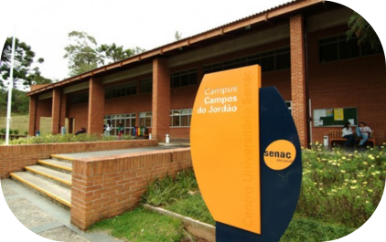
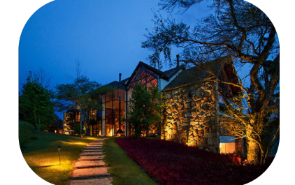
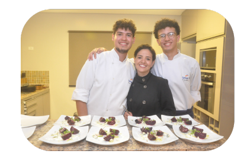

DA COZINHA PARA A TECNOLOGIA. UMA HISTÓRIA EM TRANSIÇÃO!
Da cozinha estrelada à tecnologia.
2018 - O Início na Gastronomia Mudei-me para Campos do Jordão determinado a me tornar chef. Após concluir o curso de Cozinheiro pelo SENAC, ingressei no renomado Grande Hotel Jordanense, onde trabalhei ao lado do Chef Mauro Sierro (semi-finalista do Bocuse d'Or América Latina). Paralelamente, iniciei minha graduação em Gastronomia.
2020 - Reinvenção na Pandemia Com a crise sanitária, transformei minha casa em um hub gastronômico: • Implementei um delivery de alta gastronomia • Desenvolvi conceito de personal chef e jantares exclusivos • Lancei serviços de consultoria para restaurantes
2021 - Consolidação Internacional Como parte da equipe do Hotel Six Senses Botanique (eleito Top 100 hotéis de luxo mundial e Top 88 restaurantes do Brasil), aprimorei: • Gestão de equipes multiculturais • Padronização de processos em cozinha estrelada • Experiência em gastronomia sustentável
2022 - Empreendedorismo e Docência Retornei como: • Professor e Coordenador Pedagógico no Instituto Gourmet • Autor de materiais didáticos para cursos técnicos • Palestrante em eventos de educação gastronômica
.png)
2024 - Transição para Tecnologia Buscando maior qualidade de vida, migrei para TI como: ✔ Gerente de Projetos Ágeis (Scrum/Kanban) ✔ Estudante de Tecnologia em Banco de Dados ✔ Domínio em: SQL, MySQL, Python e Power BI
